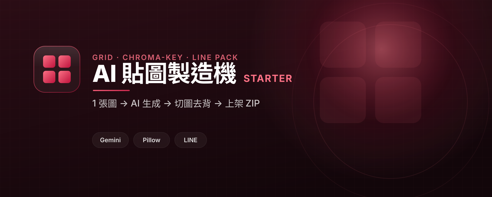

繪圖魔法師 · 進階模組
AI 貼圖製造機
把一張 AI 生圖,做成可以直接上架的 LINE 貼圖組。
會生圖只是第一步。一張綠幕九宮格,要切成單張、把背景去乾淨(不留綠邊)、縮放到 LINE 的尺寸規格、再打包成可上架的 ZIP — 真正的功夫在生圖之後的後處理管線。

把一張 AI 生圖,做成可以直接上架的 LINE 貼圖組。
會生圖只是第一步。一張綠幕九宮格,要切成單張、把背景去乾淨(不留綠邊)、縮放到 LINE 的尺寸規格、再打包成可上架的 ZIP — 真正的功夫在生圖之後的後處理管線。

程式碼與教學都公開在 GitHub,可以先自己照著跑。留下 email,我會寄送更新、小班工作坊通知、實戰 Q&A 與進階範例。
暫時沒看到表單?直接來信 yazelin@ching-tech.com
這個範本由 林亞澤(Yaze Lin) 維護 — 出身機電自動化系統整合,現在把同一套工程方法用在 AI 產品上。任職於 擎添工業 ChingTech(1984 年成立的機電自動化公司:PLC 程式、機械手臂、AGV 無人搬運、半導體封測／PCB／面板／光學產線整合)。
技術筆記與更多範例:yazelin.github.io · GitHub @yazelin
這個範本教的後處理管線,我們做成了上線中的真實產品。